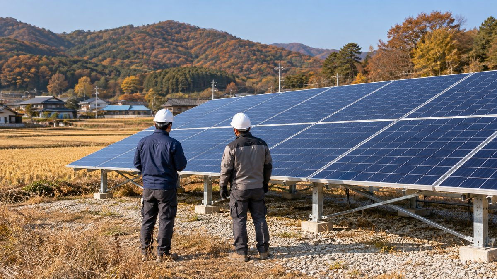

햇빛소득마을 시공·운영 전문기업 243곳 등록…에너지공단, 최저발전량 미달 땐 차액 보전하는 운영지침 시행

ReSCO 등록 4개월 새 86곳(54.8%) 늘어…부실시공 땐 5년 참여 제한, 업체 부도 땐 다른 등록기업 연계, 마을과 실제 계약은 아직 없어
한국에너지공단이 햇빛소득마을 태양광발전소의 시공부터 운영관리까지 맡는 전문기업의 자격과 책임을 정한 '햇빛소득마을 재생에너지종합서비스기업(ReSCO) 운영지침'을 만들어 시행에 들어갔다. 지침에 따라 햇빛소득마을 발전단지는 ReSCO 등록기업과 함께 지어야 하고, 한 기업이 시공과 운영관리를 함께 맡는 것이 원칙이다. 설비 결함이나 관리 소홀로 계약상 최저발전량에 못 미치면 기업이 그 차액을 마을 협동조합에 보전해야 하며, 불법 하도급이나 고의·중대 과실에 따른 부실시공으로 주민에게 재산 피해를 주면 5년 동안 사업에 참여할 수 없다. 등록 확인서는 1년마다 갱신해야 하고, 시공·운영기업이 부도나거나 사업이 멈추면 협동조합은 공단에 다른 등록기업 연계 등을 요청할 수 있다. 공단에 따르면 ReSCO 등록 기업은 4월 157곳에서 8월 243곳으로 4개월 새 86곳(54.8%) 늘었고, 지금까지 1곳이 자격을 잃었다. 1·2차 공모로 전국 523개 마을이 선정됐고 3차 공모가 이달 말까지 진행되지만, 등록기업과 마을 협동조합이 실제로 계약을 맺은 곳은 아직 없다.
시민에너지 관점
등록 기업이 243곳으로 늘었는데도 마을과 맺은 계약이 한 건도 없다는 것은, 기업 수보다 마을이 기업을 고르고 견제할 힘을 갖추는 일이 더 급하다는 뜻으로 보인다. 한 기업이 시공과 운영을 모두 맡으면 마을이 기업에 끌려다닐 수 있다는 우려도 나올 수 있는데, 최저발전량 차액 보전과 참여 제한 같은 장치는 협동조합이 계약서와 발전 실적을 직접 따질 수 있을 때 비로소 힘을 발휘한다. 주민 288명이 출자한 호주 골번의 1.4MW 협동조합 태양광처럼, 조합이 발전소의 주인으로서 계약 상대와 조건을 정할 때 수익과 결정권이 마을에 남는다. 공단은 표준계약서와 등록기업별 시공·발전 실적부터 공개해 마을이 비교하고 고를 수 있게 해야 한다.
출처: 아시아투데이 2026-10-20 배석원 원문 보기
太陽光所得村の施工・運営専門企業が243社登録…エネルギー公団、最低発電量に届かなければ差額を補填する運営指針を施行
ReSCO登録は4か月で86社（54.8%）増加…手抜き工事なら5年間の参加制限、業者倒産時は別の登録企業につなぐ、村との実際の契約はまだゼロ
韓国エネルギー公団は、太陽光所得村の太陽光発電所の施工から運営管理までを担う専門企業の資格と責任を定めた「太陽光所得村再生可能エネルギー総合サービス企業（ReSCO）運営指針」を策定し、施行に入った。指針により、太陽光所得村の発電団地はReSCO登録企業とともに建設しなければならず、1社が施工と運営管理をあわせて担うのが原則となる。設備の欠陥や管理の怠慢で契約上の最低発電量に届かない場合は、企業がその差額を村の協同組合に補填しなければならず、違法な下請けや故意・重大な過失による手抜き工事で住民に財産上の損害を与えた場合は、5年間事業に参加できない。登録確認書は1年ごとに更新が必要で、施工・運営企業が倒産したり事業が止まったりした場合、協同組合は公団に別の登録企業との仲介などを求めることができる。公団によると、ReSCO登録企業は4月の157社から8月には243社へと4か月で86社（54.8%）増え、これまでに1社が資格を失った。第1・2次公募で全国523の村が選ばれ、第3次公募が今月末まで行われているが、登録企業と村の協同組合が実際に契約を結んだ例はまだない。
市民エネルギーの視点
登録企業が243社に増えても村との契約が1件もないという事実は、企業の数よりも、村が企業を選び、けん制する力を備えることのほうが急務だということを示しているとみられる。1社が施工と運営をすべて担えば村が企業に振り回されかねないとの懸念もありうるが、最低発電量の差額補填や参加制限といった仕組みは、協同組合が契約書と発電実績を自ら点検できてはじめて力を発揮する。住民288人が出資したオーストラリア・ゴールバーンの1.4MWの協同組合太陽光のように、組合が発電所の所有者として契約の相手と条件を決めるとき、収益と決定権は村に残る。公団はまず標準契約書と登録企業ごとの施工・発電実績を公開し、村が比べて選べるようにすべきだ。
出典: Asia Today 2026-10-20 Bae Seok-won 原文を読む
阳光收入村施工运营专业企业登记达243家…能源公团施行运营指南，发电量低于最低标准须补足差额
ReSCO登记企业4个月增加86家（54.8%）…施工不良将被禁止参与5年，企业破产时可对接其他登记企业，与村庄的实际合同仍为零
韩国能源公团制定并开始施行《阳光收入村可再生能源综合服务企业（ReSCO）运营指南》，明确负责阳光收入村太阳能电站从施工到运营管理的专业企业的资格和责任。根据指南，阳光收入村发电园区必须与ReSCO登记企业合作建设，原则上由一家企业同时负责施工和运营管理。如因设备缺陷或管理疏忽未达到合同规定的最低发电量，企业须向村庄合作社补足差额；如因非法分包或故意、重大过失造成施工不良并使居民蒙受财产损失，将被禁止参与项目5年。登记确认书每年需要更新；施工或运营企业破产或项目中断时，合作社可以请求公团协助对接其他登记企业等。据公团介绍，ReSCO登记企业从4月的157家增至8月的243家，4个月增加86家（54.8%），迄今有1家被取消资格。第一、二轮公开征集共选出全国523个村庄，第三轮征集将持续到本月底，但登记企业与村庄合作社实际签订合同的案例还没有出现。
市民能源视角
登记企业增至243家，与村庄签订的合同却一份也没有，这似乎说明比起企业数量，让村庄具备挑选和制衡企业的能力更为紧迫。有人可能担心，一家企业包揽施工和运营会让村庄受制于企业；而最低发电量差额补足、禁止参与等机制，只有在合作社能够亲自核查合同和发电业绩时才能真正发挥作用。正如澳大利亚古尔本由288名居民出资的1.4MW合作社太阳能电站那样，当合作社作为电站的主人决定合作对象和条件时，收益和决策权才会留在村里。公团应首先公开标准合同以及各登记企业的施工和发电业绩，让村庄能够比较和选择。
来源: Asia Today 2026-10-20 Bae Seok-won 查看原文
243 firms register to build and run Sunlight Income Village plants as energy agency enforces rules requiring them to cover generation shortfalls
ReSCO registrations up 86 (54.8%) in four months; five-year ban for faulty construction, replacement firm arranged if a contractor fails; no village contracts signed yet
The Korea Energy Agency has put into effect operating guidelines for Sunlight Income Village Renewable Energy Service Companies (ReSCOs), setting out the qualifications and responsibilities of the specialist firms that build and then operate and maintain the villages' solar plants. Under the guidelines, Sunlight Income Village solar farms must be built with a registered ReSCO, and as a rule a single company handles both construction and operation. If a plant falls short of the minimum output set in the contract because of equipment defects or poor management, the company must pay the difference to the village cooperative, and a firm that damages residents' property through illegal subcontracting or faulty work caused by intent or gross negligence is barred from the program for five years. Registration must be renewed every year, and if a builder or operator goes bankrupt or stops work, the cooperative can ask the agency to connect it with another registered firm. According to the agency, registered ReSCOs grew from 157 in April to 243 in August, an increase of 86 (54.8%) in four months, and one firm has lost its registration so far. A total of 523 villages nationwide have been selected in the first two rounds and a third round runs until the end of this month, but no registered firm has yet signed an actual contract with a village cooperative.
Citizen Energy View
That not a single village contract has been signed even as registered firms have grown to 243 suggests that giving villages the capacity to choose and check firms is more urgent than adding more companies. Some may worry that letting one firm handle both construction and operation could leave villages at its mercy, and safeguards such as compensation for output shortfalls and participation bans only work when cooperatives can scrutinize contracts and generation data themselves. As with the 1.4MW cooperative solar farm in Goulburn, Australia, financed by 288 residents, revenue and decision-making stay in the village when the cooperative, as owner of the plant, chooses its partners and sets the terms. The agency should start by publishing a standard contract and each registered firm's construction and generation record so villages can compare and choose.
Source: Asia Today 2026-10-20 Bae Seok-won Read the original